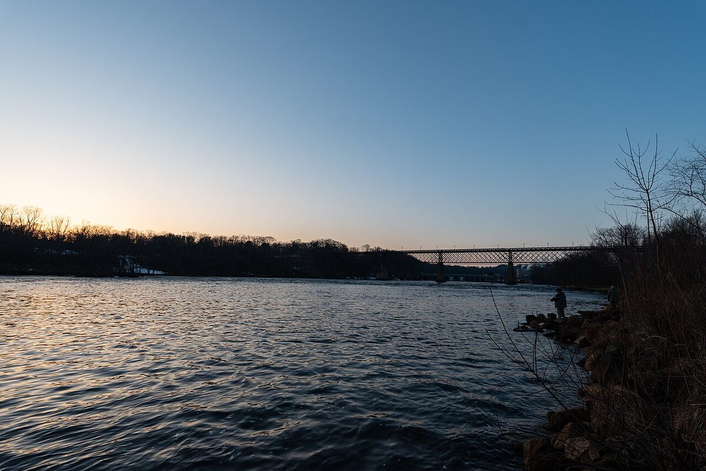

Przed zmrokiem: rozpoznanie typu wody
To nie jest relacja z konkretnej wyprawy. Nie dysponujemy potwierdzonym dziennikiem, lokalizacją, wynikiem ani warunkami jednej zasiadki, dlatego zamiast udawać reportaż przedstawiamy plan nocnego łowienia karpiowego. Godziny niżej są kolejnością działań, nie zapisem zdarzeń. Dopasuj je do regulaminu łowiska, długości dojazdu, pogody i własnego doświadczenia.
Żwirownia lub głębokie jezioro
W świetle dnia sprawdź bezpieczne dojście, twardość dna, roślinność, przejścia między płycizną a głębią oraz przeszkody utrudniające hol. Nie wpisuj do planu wymyślonych metrów ani „pewnego stołu”: sonduj wyłącznie w granicach regulaminu i wybierz dystans, który umiesz trafiać po ciemku. Dwa różne punkty — główny i zapasowy — wystarczą na pierwszą noc. Ułóż je tak, by podbieranie ryby nie wymagało schodzenia po śliskiej skarpie.
Ciepła, stojąca woda
Tu najpierw oceń dobrostan ryb. Ciepła woda wiąże mniej tlenu, a nocny spadek tlenu w wodzie żyznej lub z zakwitem może być problemem. Ryby łapiące powietrze, skupione przy dopływie, osowiałe albo długo dochodzące do siebie po wypuszczeniu są sygnałem, aby nie rozpoczynać albo przerwać łowienie. Nie rekompensuj ciszy większą ilością zanęty. Angling Trust i Environment Agency radzą w okresach upału ograniczać nęcenie i nie używać siatek do przetrzymywania ryb.
Rzeka lub woda z nurtem
Po ciemku zagrożeniem jest nie tylko ryba. Sprawdź poziom i prognozę opadów, drogę odwrotu, śliskie skarpy, gałęzie oraz miejsce postoju auta. Ustaw stanowisko powyżej przewidywalnej linii wody i nie wchodź do rzeki po zapadnięciu zmroku. Jeżeli nurt lub wiatr nie pozwalają bezpiecznie kontrolować zestawu, zrezygnuj z nocnej tury.
Plan czasu: od światła do świtu
2–3 godziny przed zmrokiem
Najpierw formalności: sprawdź możliwość połowu nocnego, liczbę wędek, zakaz wywożenia, zasady nęcenia, wymagane zezwolenie i drogę do punktu alarmowego. Następnie rozłóż matę lub kołyskę, podbierak, odhaczacz, wodę do zwilżania maty i czołówkę. Wszystko, co będzie potrzebne przy rybie, musi być w zasięgu ręki. Nie zostawiaj montażu podbieraka, zmiany baterii ani szukania apteczki na ciemność.
Ostatnia godzina światła
Przygotuj prosty, kontrolowany zestaw i przetestuj hamulec tak, aby nie dochodziło do samoczynnego zaciągnięcia wędki ani niepotrzebnie długiego holu. Uporządkuj linki i kable od sygnalizatorów, usuń z przejścia wiadra oraz ostre przedmioty. Nęcenie zacznij od małej porcji w jednym punkcie; drugi wykorzystaj dopiero, gdy regulamin i obserwacje uzasadniają zmianę. Zapisz w telefonie albo notesie, co i kiedy podałeś — w nocy pamięć łatwo dopowiada historię.
W nocy: reakcja zamiast pośpiechu
Ustal z partnerem ciche zasady: kto bierze podbierak, gdzie stoi światło i kiedy wzywa pomoc. Po sygnale nie biegnij po ciemku; załóż czołówkę w trybie niskim, upewnij się, że pod nogami nie ma linki, i zachowaj kontrolę nad rybą. Nie zostawiaj wędki bez nadzoru, gdy ryba może wejść w zaczep. Jeżeli warunki zrobią się niebezpieczne — burza, gwałtowny wzrost wody, silny wiatr, awaria oświetlenia bez zapasu — zwiń zestawy. Brak brania nie jest powodem do ryzyka.
Świt i zakończenie
Przed zwijaniem sprawdź stanowisko przy dziennym świetle: żyłki, haczyki, opakowania, baterie i śmieci. Nie zostawiaj resztek zanęty „następnemu”, jeśli regulamin albo dobrostan w ciepłej wodzie przemawiają za zabraniem jej ze sobą. Zanotuj typ wody, pogodę, temperaturę, miejsce podania i czas aktywności — to materiał do następnej decyzji, nie dowód uniwersalnej taktyki.
Bezpieczeństwo nocne i dobrostan
Osoba, światło, łączność
Nie wybieraj odludnego brzegu bez poinformowania bliskiej osoby, gdzie jesteś, jakim autem przyjechałeś i o której planujesz powrót. Naładuj telefon, pobierz mapę offline i zapisz numer do gospodarza łowiska oraz 112. Weź dwie niezależne czołówki z zapasem energii, power bank, odzież przeciwdeszczową i suche ubranie w wodoszczelnym worku. Nie kieruj silnego światła w oczy sąsiadów ani po wodzie bez potrzeby.
Ryba na pierwszym miejscu
Dobierz zestaw i sprzęt do lądowania tak, aby skrócić hol bez forsowania ryby. Używaj mokrej maty, mokrych dłoni i podpieraj całe ciało karpia; nie chwytaj za skrzela. Odhaczaj w wodzie, gdy można to zrobić bezpiecznie. Zdjęcie przygotuj wcześniej albo pomiń, jeśli ryba jest osłabiona. NOAA zaleca minimalizować czas poza wodą; po zwolnieniu rybę podtrzymuj w wodzie, dopóki nie odzyska pionu i nie odpłynie pewnie. W ciepłej wodzie nie przechowuj jej w worku ani siatce.
Checklista przed wyjazdem
- Regulamin wody i potwierdzenie, że nocne łowienie jest dozwolone.
- Telefon, mapa offline, kontakt alarmowy, informacja przekazana bliskiej osobie.
- Dwie czołówki, zapas energii, apteczka, termos i suche ubranie.
- Podbierak, mokra mata/kołyska, odhaczacz oraz sprzęt do bezpiecznego wypuszczenia.
- Plan przerwania zasiadki przy burzy, wezbraniu, oznakach niedotlenienia ryb lub problemie z dojściem.
- Worki na śmieci i transport wszystkich odpadów do domu.
FAQ — najczęstsze pytania
Czy wolno łowić nocą na każdej wodzie?
Nie. Zasady różnią się między wodami PZW, łowiskami komercyjnymi i prywatnymi. Przed wyjazdem sprawdź regulamin konkretnego gospodarza oraz warunki zezwolenia; brak zakazu w starej relacji nie jest zgodą.
Czy nocą nęcić więcej niż za dnia?
Nie ma takiej reguły. Zacznij od małej, kontrolowanej porcji i reaguj na warunki wody oraz regulamin. W ciepłej, stojącej wodzie nadmiar zanęty może pogorszyć warunki tlenowe.
Kiedy przerwać nocną zasiadkę?
Przerwij przy burzy, szybko rosnącym poziomie wody, utracie bezpiecznej drogi dojścia, awarii oświetlenia bez zapasu albo oznakach stresu tlenowego u ryb. To decyzja bezpieczniejsza niż czekanie na branie.
Nota redakcyjna i źródła
Tekst jest planem działań, nie relacją z konkretnego łowiska ani gwarancją połowu. Stan źródeł: 20 lipca 2026. Angling Trust / Environment Agency; NOAA; FAO; PZW. Regulamin łowiska i służby ratunkowe mają pierwszeństwo przed poradnikiem.
Plan awaryjny
Jeszcze w domu ustal, co robisz po ulewie, utracie telefonu, odcięciu dojazdu lub nagłym pogorszeniu stanu wody. Trzymaj kluczyki i dokumenty w suchym, stałym miejscu, nie rozpalaj ognia pod osłoną i nie wchodź do wody po sprzęt. Nocna zasiadka jest udana wtedy, gdy po jej zakończeniu Ty, sąsiedzi i ryby wracacie bezpiecznie.
Sprzęt do poradnika
Porównaj pasujące kategorie sprzętu
Poniższe kategorie odpowiadają sprzętowi omawianemu w tym poradniku. To linki afiliacyjne — FishPoint może otrzymać prowizję, ale cena dla Ciebie się nie zmienia.
Komentarze